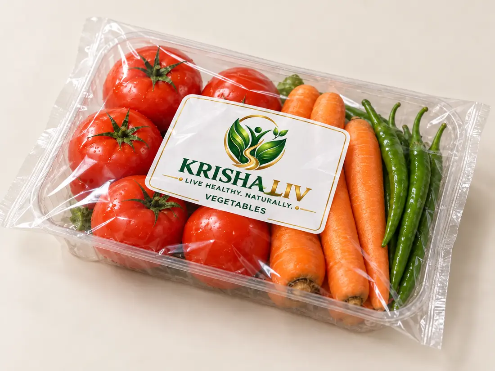
Vegetables
Fresh vegetables in a clear sealed tray and pouch.
Explore everyday produce, distinctive greens and flexible baskets guided by your household profile and food preferences.
 Fresh variety for the whole household
Fresh variety for the whole householdChoose from familiar vegetables, fruits and leafy greens, with more variety across our expanded LIV plans.
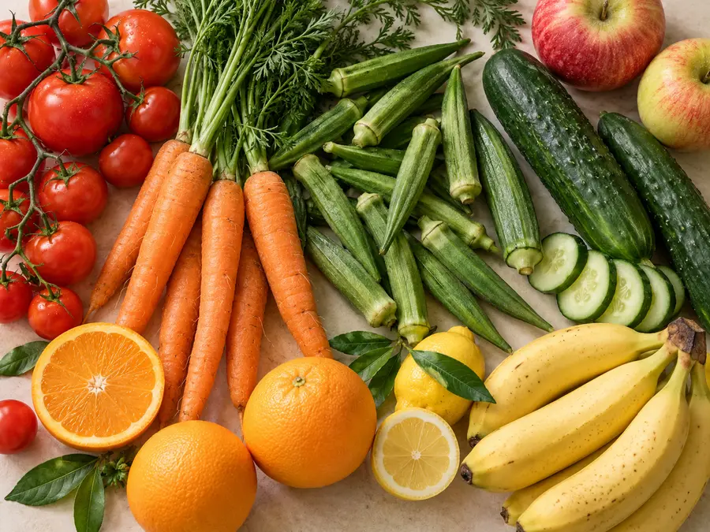
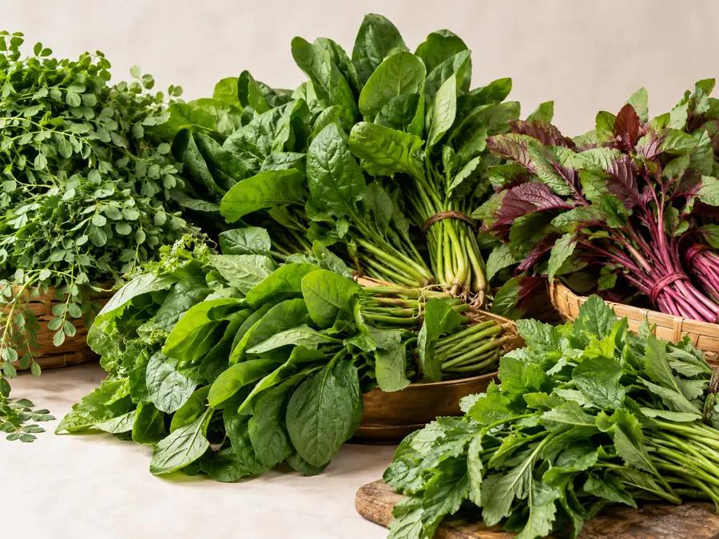
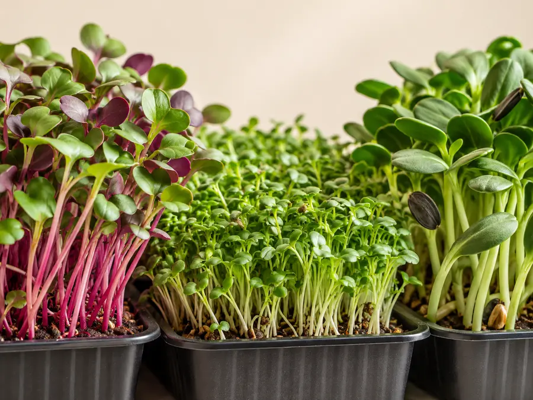
Clear trays and pouches keep each selected product visible, with the KRISHA LIV name and item label on top.

Fresh vegetables in a clear sealed tray and pouch.
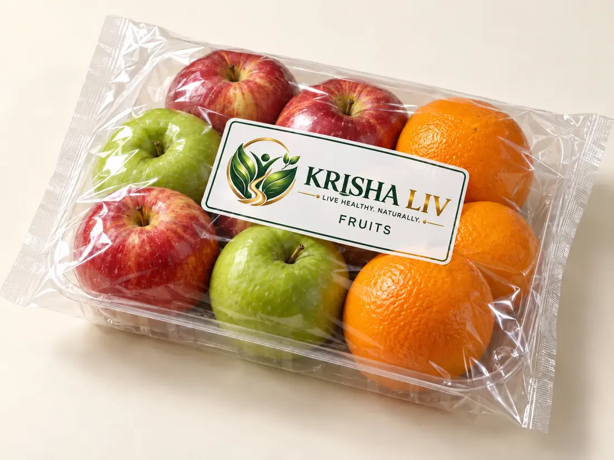
Fruit selection in visible protective packaging.
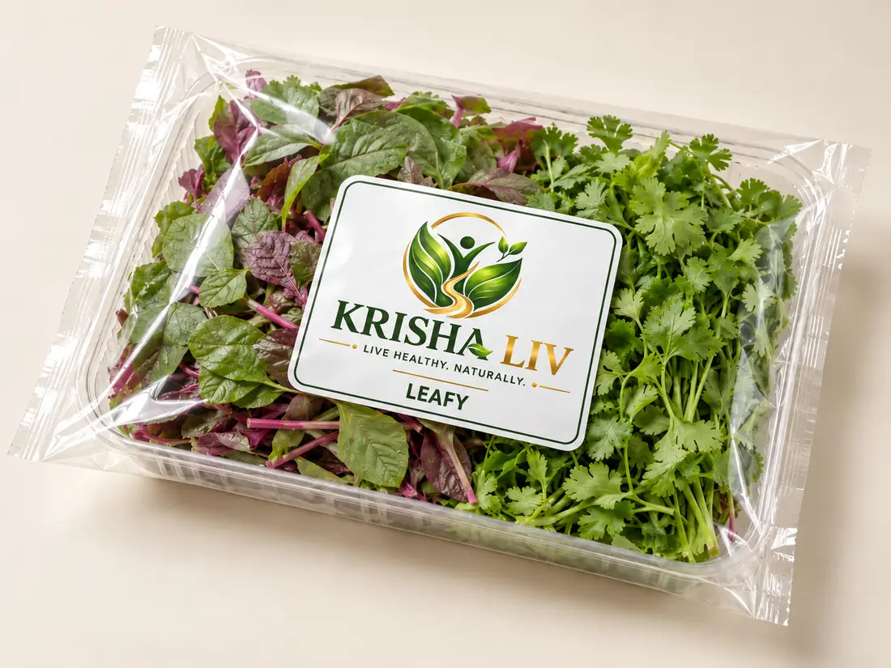
Prepared leafy greens in a clear sealed pack.
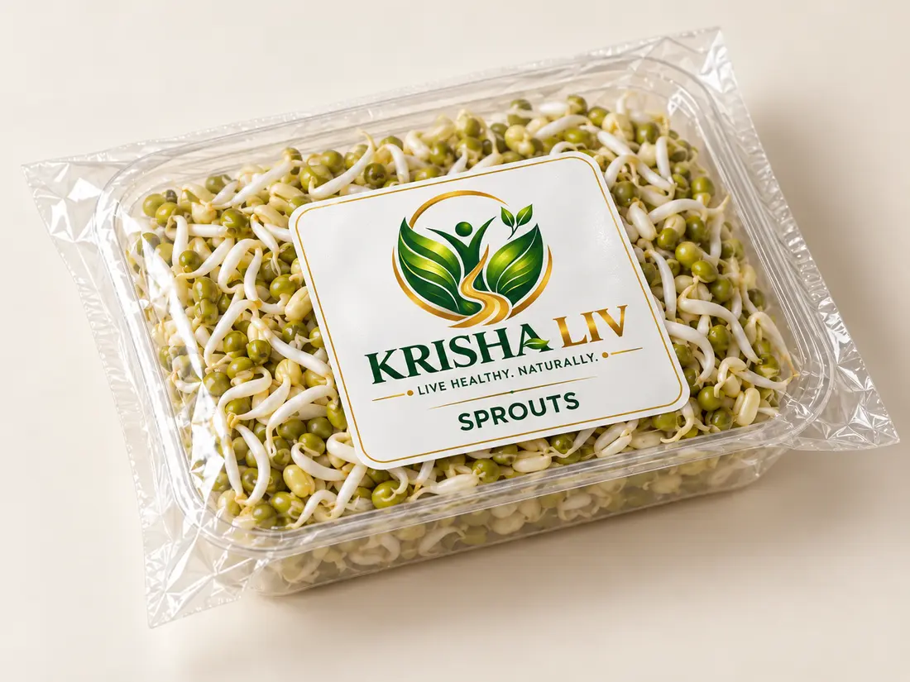
Sprouted ingredients in a transparent tray.
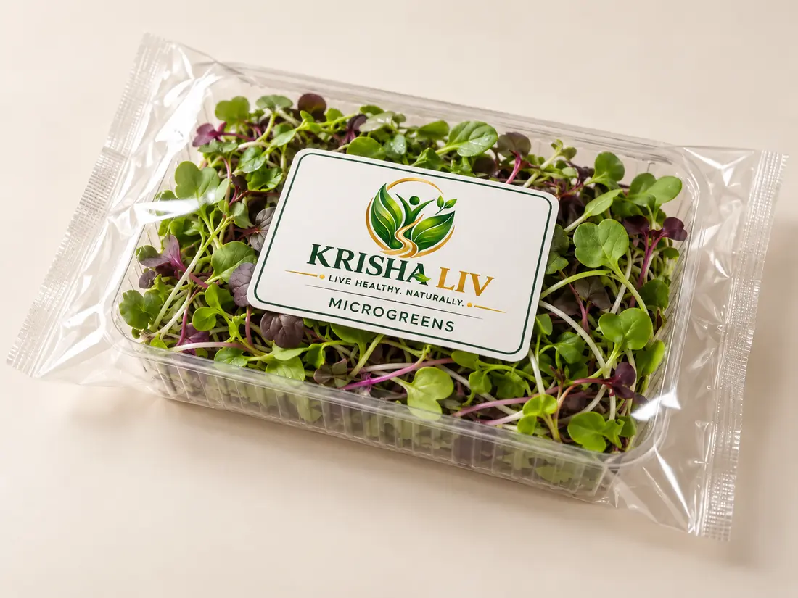
Tender greens shown in their protective pack.
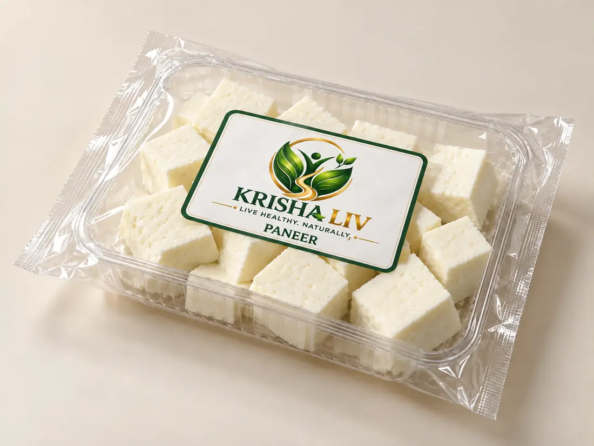
Chilled paneer in a clear sealed pack.
Chilled tofu in a clear sealed pack.
Packaging and label designs are visual concepts. Sealing method, shelf life, storage, food-contact suitability and chilled handling require product-specific validation.
To make fresh, varied and informed food choices easier for households to sustain.
To bring together quality food selection, understandable nutrition information and a convenient basket experience shaped by each household’s preferences.
To help customers build practical food routines, reflect on their choices and get appropriate nutrition support when needed.
Health and nutrient suggestions support food planning. Individual medical diets require review by a qualified professional.
Illustrative branded basket images show the plan tiers. LIV Essentials contains only its eight listed ingredients. Exact weights, prices and substitutions will be confirmed in the live catalog.
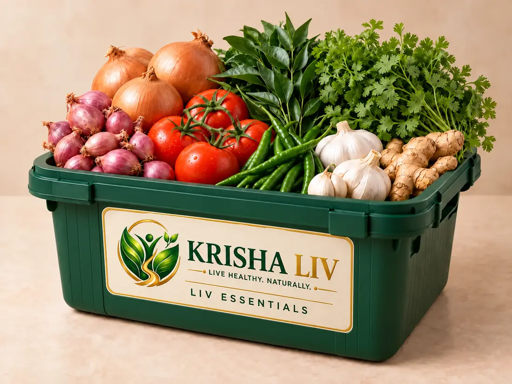
An everyday essentials basket containing only the core ingredients listed below.
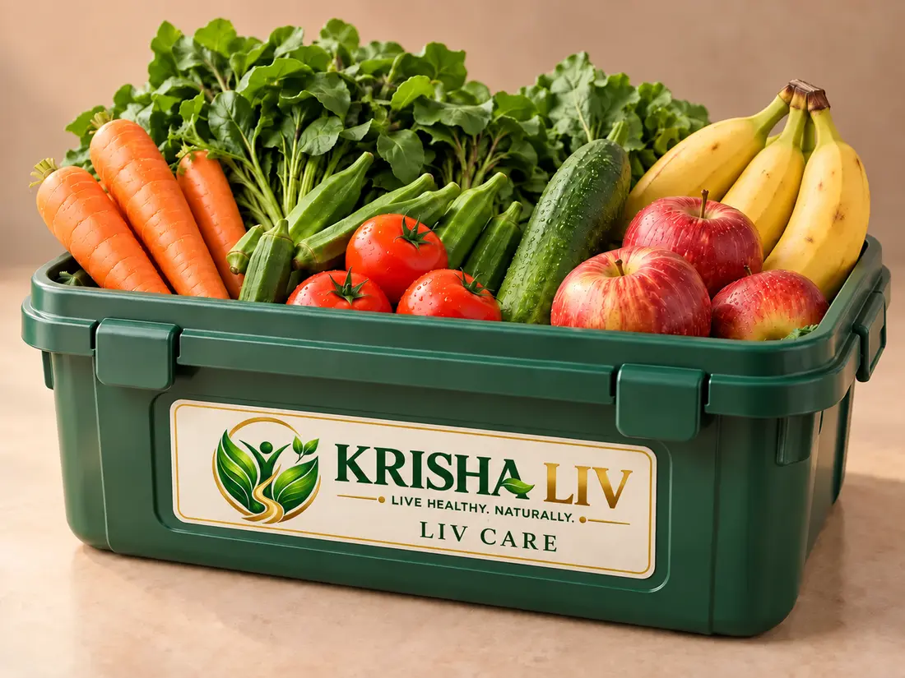
Vegetables, fruits and leafy vegetables, selected to make everyday meals more varied.
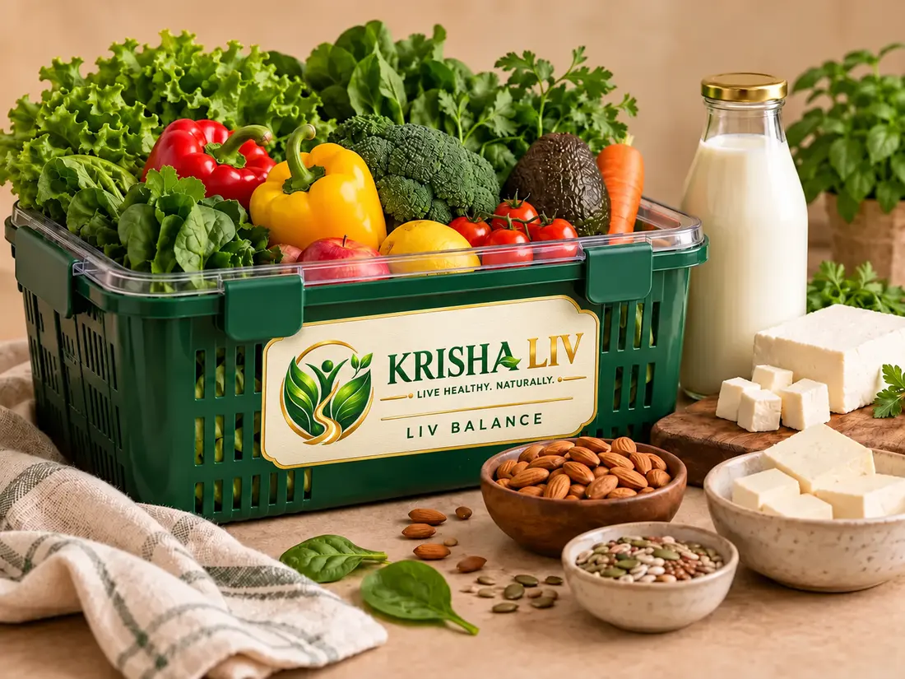
Adds exotic vegetables and fruits, milk products and plant-based pantry choices to the LIV Care range.
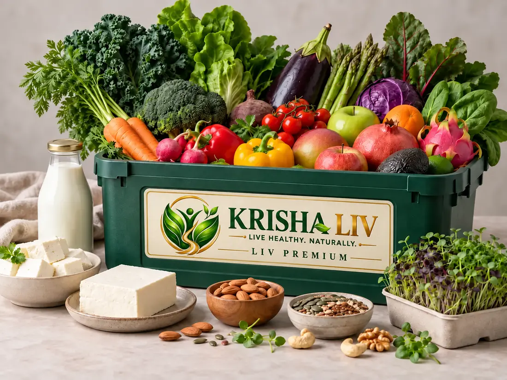
Builds on LIV Balance with microgreens for more fresh variety across the week.
A planned digital journey that helps you choose, review and adapt your food routine.
Order through the website or app and enter basic household details, delivery location and food preferences.
Add wellness goals and food restrictions. The planned system can suggest relevant goals and flag conflicting choices.
Compare basket options and proposed products alongside available nutrition information and portion details.
Select an alternate-day or weekly basket schedule where delivery is available. Confirm the contents, price and timing before ordering.
Use the planned daily check-in and food log to review intake and progress over time. Values are estimates and depend on what is actually eaten.
The planned experience includes nutritionist review and a feedback channel to refine suitable basket choices.
App and website ordering, automated recommendations, nutrition tracking, nutritionist reviews and subscriptions are planned features. They are shown here as a service concept, not active functions in this preview.
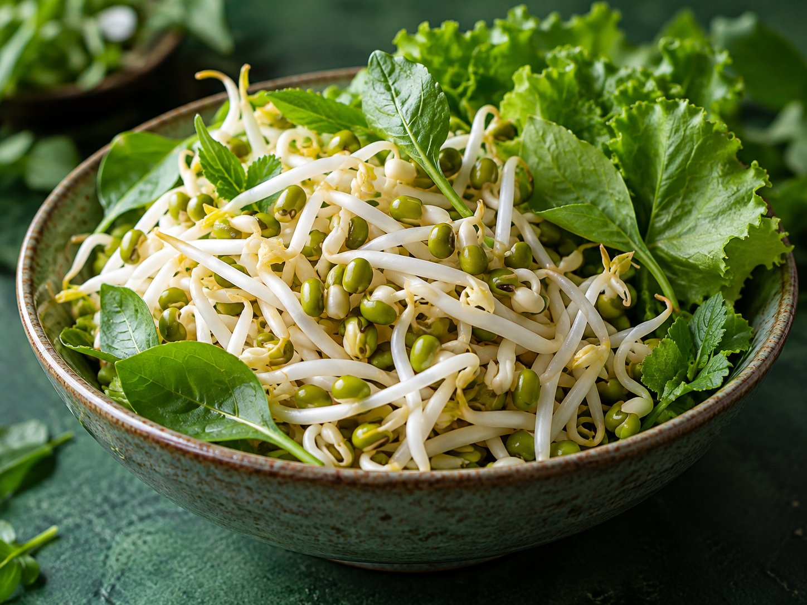
KRISHA LIV brings everyday food shopping together with a more personal way to choose. The experience is designed to consider goals, food restrictions, household needs and relevant nutrition information, with professional review for situations needing individual attention.
Read our story ↗We welcome questions about products, baskets, supplier partnerships and the upcoming ordering experience.
KRISHA LIV
Coimbatore, Tamil Nadu